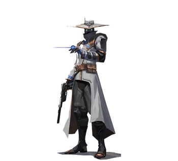

| Amir El Amari (árabe: أمير العماري; que significa "príncipe de la luna") es oriundo de Rabat, Marruecos. Al crecer y vivir allí en ocasiones en la pobreza, los recursos de su ciudad se agotaron debido a las actividades de Kingdom Corporation en el área, y como resultado, El Amari albergaba una visión negativa hacia ellos. Un corredor de información que está constantemente reuniendo información, El Amari en su mayoría mantiene los resultados de su trabajo y sus secretos cerca de su pecho, especialmente aquellos sobre sí mismo. Al hacer todo lo posible para asegurarse de que nadie pueda recopilar secretos sobre el hombre que conoce todos los secretos, El Amari ha establecido múltiples casas de seguridad para permanecer oculto y nunca ir a ningún lado sin usar su máscara negra que oculta la cara. Incluso una vez reclutado por el secreto Protocolo VALORANT como su quinto agente, "Cypher", El Amari aún mantiene su rostro e identidad ocultos a sus compañeros agentes. Por ahora, nada vale el riesgo de quitarse la máscara, ni siquiera para los más cercanos a él. |
 |